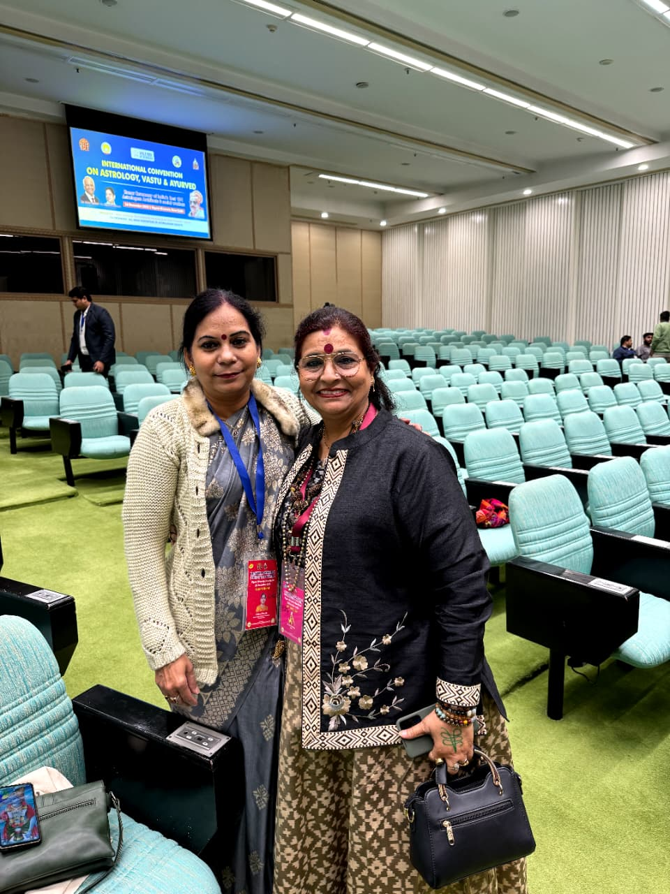

With years of dedicated practice in Vedic astrology and spiritual healing, I help individuals navigate life's challenges through ancient wisdom and modern understanding
I am Seemaa Pathak, a dedicated Vedic astrologer and spiritual healer based in Bhusawal, Maharashtra. My journey into the mystical world of astrology began over a decade ago, driven by a deep desire to help others find clarity, purpose, and healing through ancient wisdom.
With years of experience in Vedic Astrology and spiritual healing, I have been guiding individuals on their cosmic journey. I combine ancient wisdom with modern understanding to provide profound insights and healing that resonate with today's challenges and aspirations.
My expertise spans multiple modalities including Vedic Astrology, Tarot Reading, Numerology, Lal Kitab Remedies, Palmistry, Akashic Record Reading, PLR Therapy, and Psychic Guidance. I offer consultations in both Hindi and English, serving clients globally through online and offline sessions.
My approach is rooted in compassion, accuracy, and practical guidance. I believe that astrology is not just about predicting the future, but about empowering individuals to make informed decisions and transform their lives through self-awareness and cosmic alignment.

Comprehensive spiritual guidance through multiple healing modalities
Expert analysis of birth charts, planetary positions, and cosmic influences to provide accurate life guidance and predictions.
Deep healing through past life exploration to resolve karmic patterns, phobias, and relationship issues affecting your present life.
Access cosmic records to understand your soul's journey, life purpose, and receive profound spiritual insights for healing.
Name corrections, life path analysis, and numerological remedies to align your vibrations with success and abundance.
Prescribing powerful gemstones based on your birth chart to enhance positive energies and neutralize negative influences.
Harmonizing your living and working spaces with cosmic energies to promote health, wealth, and overall well-being.
I bridge the gap between traditional Vedic knowledge and contemporary life challenges, making ancient wisdom accessible and practical for today's world.
My goal is not just to predict your future, but to empower you with the knowledge and tools to shape your destiny consciously.
I address the interconnectedness of mind, body, and spirit, providing comprehensive solutions that heal at all levels of existence.
Your privacy and comfort are paramount. I create a safe, non-judgmental space where you can explore your deepest concerns freely.
Recognized for outstanding contributions to traditional astrology practices and modern applications
Awarded for exceptional client transformation through holistic healing approaches
Honored by international spiritual organizations for service excellence and global reach
Take the first step towards clarity, healing, and transformation with personalized guidance